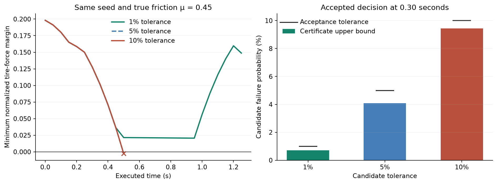
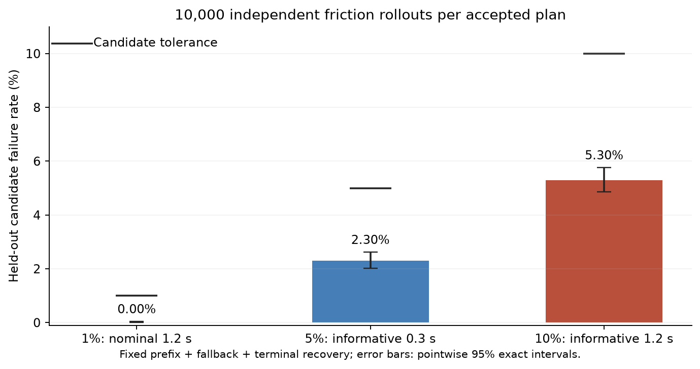
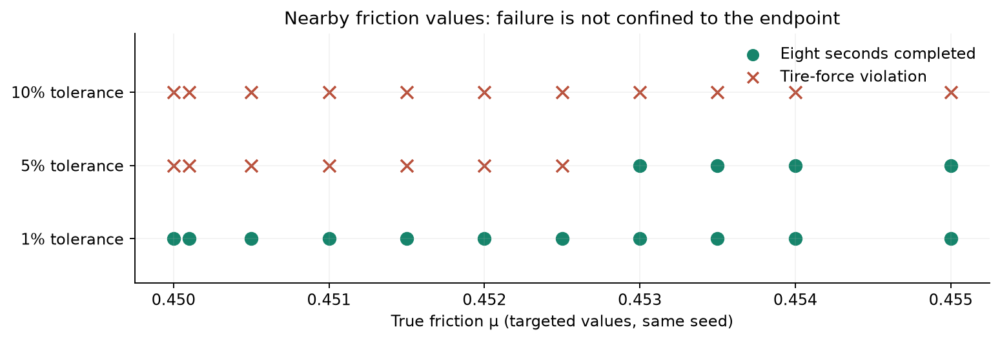

All MPPI results · Completed 2,000-run study
How probabilistic acceptance permits an executed violation
In matched low-friction tests, increasing the allowed candidate risk changes which informative prefix is accepted. Some accepted prefixes then violate the modeled tire-force constraint during execution. The MPPI optimizer, informative γ = 2, SMID update, selection rule and DRS test are unchanged.
1. What 1%, 5% and 10% mean
At each decision, a candidate consists of a planned prefix followed by the fallback controller. Certification draws 1,000 friction values from the assumed uniform distribution over the current SMID interval. Each friction value stays constant throughout its rollout.
A candidate rollout failure means a state or tire-force constraint is violated, or the terminal recovery condition is not met. From the failure count, the test computes a binomial upper confidence bound U on this event’s probability. It accepts the candidate only when U ≤ ε.
Here ε is 1%, 5% or 10%. The confidence allocation is δ/64 = 0.05/64 per candidate: a one-sided 99.921875% bound for each completed check, with the confidence budget allocated across at most 64 checks per decision. This confidence level is distinct from the allowed failure probability ε.
ε applies to a candidate plus fallback. It is not a target failure frequency or a whole-episode safety guarantee. A candidate can pass while some friction realizations still violate its constraints.
2. What happened during actual driving
The three runs use the same starting state at 0 m, seed 20100, and constant true friction μ = 0.45. The initial uncertainty is [0.45, 1.05]. At t = 0.30 s, executed measurements have narrowed it to [0.45, 0.578775]. The tolerance settings then produce these decisions:
At 5% and 10%, the accepted informative action requires combined longitudinal/lateral tire forces beyond the modeled capacity at μ = 0.45. At t = 0.50 s, the normalized tire-force margin is −0.002639. The simulator stops at this constraint violation; it does not simulate a collision. The 1% run completes its eight-second test without an executed violation.

Left: measured simulation outcome, with zero marking the tire-force constraint boundary. The 5% and 10% traces overlap through the violation. Right: the certificate upper bounds that permitted the selected prefixes.3. Isolating the effect of the tolerance
At t = 0.30 s, the generated informative controls, reference states and certification sample seeds are identical across the three runs. Only the risk threshold changes which prefixes pass:
Rejection can stop sampling early. The displayed full-batch bounds come from the matching completed 1,000-sample checks at the higher tolerances; partial rejection batches are not treated as completed certificates.
This comparison shows the acceptance mechanism directly: the 5% setting admits the short informative prefix that 1% rejects, and the 10% setting additionally admits the longer prefix that 5% rejects. The selected prefixes still pass the existing pairing, exploration-budget and information-gain selection rules.
4. What the 2.30% and 5.30% estimates measure
This is a separate experiment. Each selected policy is frozen at the recorded t = 0.30 s state. We draw 10,000 fresh friction values from Uniform[0.45, 0.578775] and execute that fixed prefix followed by fallback, checking constraints and terminal recovery. There is no subsequent replanning in these tests.
The draws are independent of the certification samples and paired across the three policies. Each reported percentage is the fraction of these candidate tests that fail any certification condition. It is not an observed whole-episode crash rate.
These are pointwise two-sided 95% Clopper–Pearson intervals for the independent test results. They differ from the confidence allocation used to accept candidates. In particular, 0/10,000 is zero observed failures, not proof of zero failure probability.

The horizontal marks are candidate tolerances. Bars and error bars describe independent prefix-plus-fallback tests, including terminal recovery. Every friction draw and outcome.The observed candidate failure rates remain below their allowed tolerances. Nevertheless, the actual μ = 0.45 realization violates the tire-force constraint for the two informative policies. This is the residual risk that the probabilistic acceptance rule permits.
5. Nearby friction values and the earlier zero-violation study
We then tested ten nearby friction values, using the same seed and initial interval: 0.4501, 0.4505, 0.451, 0.4515, 0.452, 0.4525, 0.453, 0.4535, 0.454 and 0.455. Executed violation counts were 0/10 at 1%, 6/10 at 5%, and 10/10 at 10%. The 5% failures occur through μ = 0.4525; 10% also fails at the four higher tested values.

The figure also includes the original μ = 0.45 example. These are deliberately selected sensitivity tests, so their failure fractions do not estimate general driving failure probabilities.The earlier 2,000 launches sampled true friction from [0.76, 1.05], with the same initial interval. They observed zero violations over eight seconds. The new failures occur near μ = 0.45, with initial uncertainty [0.45, 1.05]. The two studies test different operating conditions. An additional 64 launches at 10% using the original [0.76, 1.05] distribution also completed without violations.
6. Complete counts and what the audits verify
The boundary grid deliberately emphasizes low friction; the nearby-value refinement was chosen after discovering the failure. The table preserves all exploratory outcomes, but its targeted-case fractions are not population risk estimates. “Unresolved” counts an unavailable certificate, simulation error or audit error.
214 executions include 18 tire-force violations. All 214 replay audits passed: the recorded controls, measurements, decisions and outcomes were reproduced correctly, including the violating executions. An audit pass is a consistency check, not a claim that the execution was safe. The original certification sample counts also matched when regenerated for the three illustrated decisions.
Every exploratory execution · Certificate and independent-test details · Initial probe protocol · Refinement protocol
Supported conclusion
These matched experiments demonstrate that a higher permitted candidate risk can admit informative prefixes with larger unsafe subsets of the current friction uncertainty interval, and that particular friction realizations can produce executed tire-force violations. They do not establish a universal relationship between ε and whole-episode failure probability.
Numerical source SHA256: ef5c0050f493105beeec5201d96fbdcc4e73199512326a80a2bcf354641d3579. Reproduce with tools/probe_mppi_risk.py, tools/refine_mppi_risk.py, then tools/report_mppi_risk.py in the implementation repository.
Download figures, all outcomes and protocols